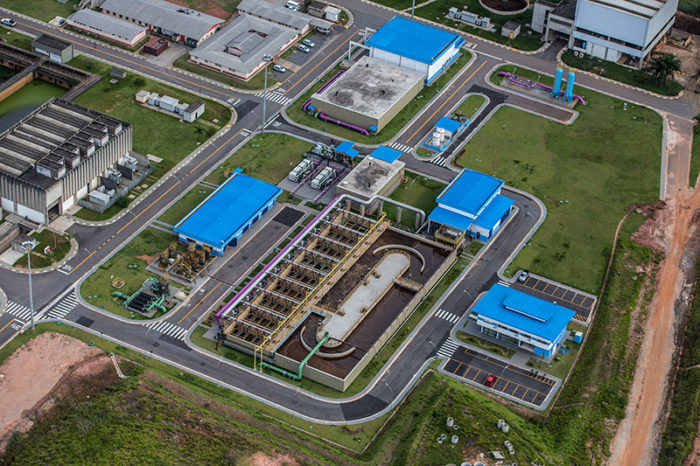

O Reúso de água em polos Industriais
Em busca da sustentabilidade nas suas mais diversas formas, as indústrias também recorrem ao reuso de água. Foi o que aconteceu na Região Metropolitana de São Paulo (RMSP) que tem um alto consumo.
Para que houvesse segurança hídrica, o Polo Petroquímico aderiu ao uso de água de efluentes tratada, substituindo o uso de água potável.
A implantação do projeto foi uma parceria entre as indústrias do polo, a Companhia de Saneamento Básico do Estado de São Paulo (Sabesp) e a Foz do Brasil.
Para se ter uma ideia, o consumo diário do polo é de 600 mil L/s. Sendo o suficiente para suprir um município com 350.000 habitantes.
Os engenheiros sanitaristas e ambientais que descrevem o projeto, chamado Aquapolo, elencam benefícios como: geração de energia, resfriamento de equipamentos e outros processos industriais. Dada a economia, a Sabesp calcula poder abastecer 300 mil pessoas com a água potável economizada.